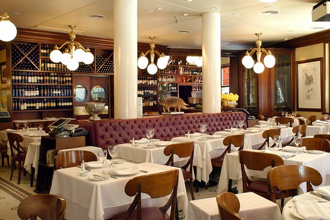

Sobre nosotros
La Fonda Di Croce es un restaurante familiar que ha estado sirviendo a la comunidad durante más de 50 años. Ofrecemos una amplia variedad de platos auténticos que seguramente satisfarán tus antojos. Ya sea que estés de humor para pizza, empanadas o hamburguesas, tenemos algo para todos. Nuestro amable personal está dedicado a brindarte un servicio excepcional y asegurarse de que tengas una experiencia gastronómica agradable. Ven a visitarnos hoy mismo y descubre por qué La Fonda Di Croce será tu lugar favorito.
